January, 14th 2020¶
Motivation: Combining datasets using Canonical Correlation Analysis (CCA). Can we find shared latent dimensions that have large correlation across datasets? By mapping data from neuron space to this common latent space, we can combine data across experiments for the classification analysis.
Result: Preliminary results show that this is possible. Thorough analysis is needed to understand the nature and content of this space.
# HIDE CODE
# imports
import os
import sys
import h5py
import pickle
import random
import numpy as np
import pandas as pd
from os.path import join as pjoin
from copy import deepcopy as dc
from tqdm.notebook import tqdm
from collections import Counter
import matplotlib.pyplot as plt
import seaborn as sns
sns.set_style('white')
github_path = pjoin(os.environ['HOME'], 'Dropbox/git/A1ToneDiscrimination/')
sys.path.insert(0, github_path)
from utils.process import *
from utils.generic_utils import *
from utils.plot_functions import *
import warnings
warnings.filterwarnings('ignore', category=RuntimeWarning)
import rcca
from sklearn.linear_model import LogisticRegression
from sklearn.metrics import balanced_accuracy_score, matthews_corrcoef, f1_score
from analysis.cca_analysis import *
# load data
dirs_dict = get_dirs()
CCA analysis¶
Here I will first briefly review the data structure we have. Then, I will describe how CCA can be used to combine these datasets, despite dimensionality mismatch that has bugged us for a long time.
Data structure¶
We have 34 experiments, each with different number of trials and different number of neurons. The data for each experiment is organized as follows:
where we have:
\(X_\mu\) is DFF traces for experiment indexed by \(\mu\) (I will use greek indices such as \(\mu\) to index experiments). Therefore, using this notation, the followig set contains all the data \(\{X_\mu | \mu \in 0\dots33\}\).
All experiments have the same \(nt = 135\) time points that corresponds to a duration of \(135/30 = 4.5\) s, since data acquisition frequency was \(30\) Hz.
Each experiment has potentially different number of trials, \(ntrials_\mu\). These trials are labeled as hit or miss and so on. Stimulus frequency presented during these trials is another variable that we can use to align trials.
Each experimenta has different number of neurons, \(nc_\mu\). Crucially, these neurons are ordered arbitrarily and there are no a priori correspondence between neuron \(i\) from experiment \(\mu\) to neuron \(i\) from experiment \(\nu\).
One of the main challenges has been combining these datasets by overcoming the dimensionality problem. To do this, we need to find a common space with the same dimensionality and meaning shared across all experiments. In this space, dimension \(i\) has a fixed meaning. In contrast, in neuron space this does not exist. It turns out we can use CCA to address this issue.
Canonical correlation analysis (CCA)¶
For simplicity, imagine we only had two datasets, \(X_1\) and \(X_2\) with \(nc_1\) amd \(nc_2\) number of neurons. Let’s assume for now that these both experiments have \(100\) total number of trials: \(50\) hit and \(50\) miss. As another simplification, let’s assume we are only interested in a timepoint \(t = 45\). Under these assumptions, we have \(X_1 \in \mathbb{R}^{100 \,\times\, nc_1}\), and \(X_2 \in \mathbb{R}^{100 \,\times\, nc_2}\). The goal is to find vectors \(a_1 \in \mathbb{R}^{nc_1 \,\times\, K}\), and \(a_2 \in \mathbb{R}^{nc_2 \,\times\, K}\) that map the data from neuron space into a \(K-\)dimensional canonical space. Define:
where \(U\) and \(V\) are called canonical variates. The obkective function of CCA is to find a set of loading vectors \(a_\mu\) that maximize correlation between canonical variates:
output_trn, output_tst = prepare_cca_data(
h_load_file=dirs_dict['h_load_file'],
min_nb_trials=100,
target=True,
global_normalize=True,
augment_data=False,
xv_folds=5,
which_fold=0,
time_range=range(45, 51),
verbose=True,
)
scabbers_2016-08-31 (135, 100, 67)
scabbers_2016-09-07 (135, 124, 65)
scabbers_2016-09-22 (135, 133, 73)
scabbers_2016-09-23 (135, 110, 62)
scabbers_2016-09-28 (135, 134, 52)
[item.shape for item in output_trn['processed']]
[(486, 67), (486, 65), (486, 73), (486, 62), (486, 52)]
[item.shape for item in output_trn['raw'].values()]
[(6, 81, 67), (6, 101, 65), (6, 108, 73), (6, 89, 62), (6, 109, 52)]
[item.shape for item in output_tst['raw'].values()]
[(6, 19, 67), (6, 23, 65), (6, 25, 73), (6, 21, 62), (6, 25, 52)]
output_tst['labels']
array([0, 0, 0, 0, 0, 0, 0, 0, 0, 0, 0, 0, 0, 0, 0, 0, 0, 0, 0, 0, 0, 0,
0, 0, 0, 0, 0, 0, 0, 0, 0, 0, 0, 0, 0, 0, 0, 0, 0, 0, 0, 0, 0, 0,
0, 0, 0, 0, 0, 0, 1, 1, 1, 1, 1, 1, 1, 0, 0, 0, 0, 0, 0, 0, 0, 0,
0, 0, 0, 0, 0, 0, 0, 0, 0, 0, 0, 0, 0, 0, 0, 0, 0, 0, 0, 0, 0, 0,
0, 0, 0, 0, 0, 0, 0])
global_mean = np.mean([item.std() for item in output_trn['raw'].values()])
global_std = np.mean([item.std() for item in output_trn['raw'].values()])
global_mean, global_std
(1.01029751545895, 1.01029751545895)
train_list = output_trn['processed']
y_trn = output_trn['labels']
test_list = output_tst['processed']
y_tst = output_tst['labels']
y_trn.shape, y_tst.shape
((405,), (95,))
sum(y_trn) / len(y_trn), sum(y_tst) / len(y_tst)
(0.4469135802469136, 0.4631578947368421)
import rcca
from tqdm.notebook import tqdm
regs = np.logspace(-8, 2, num=20)
num_ccs = np.arange(1, 101, 1)
r_all = np.zeros((len(regs), len(num_ccs)))
for j, num_cc in tqdm(enumerate(num_ccs), total=len(num_ccs)):
for i, reg in enumerate(regs):
cca = rcca.CCA(
kernelcca=True,
ktype='linear',
reg=reg,
numCC=num_cc,
verbose=False,
)
cca.train([item / np.sqrt(num_cc) for item in train_list])
testcorrs = cca.validate(test_list)
corrs = []
for item in testcorrs:
corrs.append(np.mean(np.abs(item)))
pred_r = np.mean(corrs)
r_all[i, j] = pred_r
sns.set_style('white')
plt.figure(figsize=(17, 8))
plt.imshow(r_all, aspect=1.2)
plt.colorbar(shrink=0.4)
plt.xlabel('# components', fontsize=15)
plt.ylabel('Regularization', fontsize=15)
xticks = range(0, len(num_ccs), 5)
yticks = range(0, len(regs), 4)
plt.xticks(ticks=xticks, labels=[num_ccs[i] for i in xticks], fontsize=13)
plt.yticks(ticks=yticks, labels=['{:.1e}'.format(regs[i]) for i in yticks], fontsize=13)
plt.title('effect of num components and regularization in cross validated correlations', fontsize=17, y=1.02)
plt.show()
a, b = np.unravel_index(np.argmax(r_all), r_all.shape)
best_reg = regs[a]
best_cc = num_ccs[b]
best_reg, best_cc, r_all[a, b]
(2.6366508987303554, 74, 0.24313643382806155)
best_reg = 2.6366508987303554
best_cc = 74
cca = rcca.CCA(
kernelcca=True,
ktype='linear',
reg=best_reg,
numCC=best_cc,
verbose=False,
)
cca.train([item / np.sqrt(best_cc) for item in train_list])
testcorrs = cca.validate(test_list)
corrs = []
for item in testcorrs:
corrs.append(np.mean(np.abs(item)))
pred_r = np.mean(corrs)
pred_r
0.24313643382806155
[item.std() for item in cca.comps]
[1.4169573198262593,
1.7906731089748553,
2.7504465243516543,
2.5812042862362,
2.663279500990638]
[item.std() for item in cca.ws]
[0.4266867512017132,
0.4622012546793848,
0.5499353578117441,
0.5912375560806967,
0.6201057189628766]
x_trn = [x @ w for x, w in zip(train_list, cca.ws)]
x_tst = [x @ w for x, w in zip(test_list, cca.ws)]
x_trn, x_tst = tuple(map(np.concatenate, [x_trn, x_tst]))
x_trn.shape, x_tst.shape
((405, 79), (95, 79))
comps = np.concatenate(cca.comps)
comps.shape, x_trn.shape
((405, 79), (405, 79))
from scipy.stats import pearsonr
pearsonr(comps[:, 70], x_trn[:, 70])
(1.0, 0.0)
np.var(comps[:, 0]), np.var(x_trn[:, 0])
(0.3478161230929137, 27.47747372434018)
plt.plot(comps[:100, 0] * 7)
plt.plot(x_trn[:100, 0], 'r--')
[<matplotlib.lines.Line2D at 0x7f9bf548d340>]
from sklearn.metrics import matthews_corrcoef, balanced_accuracy_score
from sklearn.linear_model import LogisticRegression
mcc_list = []
clf_regs = np.logspace(-2.7, 0.8, 2000)
for C in clf_regs:
clf = LogisticRegression(
penalty='l1',
C=C,
solver='liblinear',
class_weight='balanced',
max_iter=1000,
random_state=42,
).fit(x_trn, y_trn)
y_pred = clf.predict(x_tst)
balacc = balanced_accuracy_score(y_tst, y_pred)
mcc = matthews_corrcoef(y_tst, y_pred)
mcc_list.append(mcc)
# print(C, balacc, mcc)
plt.plot(mcc_list)
[<matplotlib.lines.Line2D at 0x7fe080680220>]
idx = np.argmax(mcc_list)
idx, mcc_list[idx], clf_regs[idx]
(882, 0.47422390835467176, 0.06986700650984254)
Lessons learned:¶
Normalizing, both local, and global, helps CCA
Normalizing helps clf as well
best_clf_reg = 0.0699
clf = LogisticRegression(
penalty='l1',
C=best_clf_reg,
solver='liblinear',
class_weight='balanced',
max_iter=int(1e4),
tol=1e-5,
random_state=42,
).fit(x_trn, y_trn)
y_pred = clf.predict(x_tst)
balacc = balanced_accuracy_score(y_tst, y_pred)
mcc = matthews_corrcoef(y_tst, y_pred)
balacc, mcc
(0.7377450980392157, 0.47422390835467176)
TODO:¶
it seems like normalizing, both globally and locally helps CCA. But do you need to normalize in CLF as well?
run a test below and find out. you have comparison point for when things were normalized, not run CCA with nromalized, but add another paragraph to regenerate data trn test etc without normalization and feed that into clf! see if this helps. Porbably will not tho
results = pd.read_pickle('./results_night.df')
best = extract_best_hyperparams(results, 'mcc')
best hyperparams:
n_components: 81,
cca_reg: 7.386e-03,
clf_reg: 4.717e-03,
pred_r: 0.1884
mcc: 0.5771
plot_results(results=results, best=best, figsize=(9, 7))
results = pd.read_pickle('./results_precision.df')
best = extract_best_hyperparams(results, 'mcc')
best hyperparams:
n_components: 81,
cca_reg: 1.017e-02,
clf_reg: 8.694e-03,
pred_r: 0.1912
mcc: 0.5814
plot_results(results=results, best=best, figsize=(6, 6))
— New!¶
### this ==> './results_(2021_01_15).df'
results, best, args = fit_cca_loop(
h_load_file=dirs_dict['h_load_file'],
n_seeds=3,
num_ccs=np.arange(75, 84, 1),
cca_regs=np.linspace(1e-4, 1e-2, 30),
clf_regs=np.linspace(1e-3, 1e-2, 30),
)
results = pd.read_pickle('./results_(2021_01_15).df')
best = extract_best_hyperparams(results, 'mcc')
best hyperparams:
n_components: 79,
cca_reg: 1.000e-02,
clf_reg: 5.655e-03,
pred_r: 0.1901
mcc: 0.5782
plot_results(results=results, best=best, figsize=(4, 4.5))
plot_reg_comparison(results, best, components=[75, 77, 78, 79, 80, 81], scale='linear')
— New!¶
Study clf coefficients¶
output = get_best_cca_clf(
h_load_file=dirs_dict['h_load_file'],
best=best,
min_nb_trials=100,
time_range=range(45, 46),
target=True,
global_normalize=True,
augment_data=False,
xv_folds=5,
which_fold=1,
random_sate=42,
)
[PROGRESS] fitting done. results:
corr: 0.192, balanced accuracy: 0.791, mcc: 0.581
coeffs = output['clf'].coef_.flatten()
coeffs
array([ 0. , 0. , 0. , 0. , 0. ,
0. , 0. , 0. , 0. , 0. ,
0.06545288, 0. , 0. , 0. , 0. ,
0. , 0. , 0. , 0. , 0. ,
0. , 0. , 0. , 0. , 0. ,
0. , 0. , 0. , 0. , 0. ,
0. , 0. , 0. , -0.00605412, 0. ,
0. , 0. , 0. , 0. , 0. ,
0. , 0. , 0. , 0. , 0. ,
0. , 0. , 0. , 0. , 0. ,
0. , 0. , 0. , 0. , 0. ,
0. , 0. , 0. , 0. , 0. ,
0. , 0. , 0. , 0. , 0. ,
0. , 0. , 0. , 0. , 0. ,
0. , 0. , 0. , 0. , 0. ,
0.00316791, 0. , -0.00695389, 0.00935005])
sns.set_style('whitegrid')
plt.figure(figsize=(4, 2.5))
plt.plot(coeffs)
nonzero_comps = np.where(coeffs != 0)[0]
plt.show()
nonzero_comps
array([10, 33, 75, 77, 78])
sns.set_style('whitegrid')
nrows = 2
ncols = int(np.ceil(len(nonzero_comps) / nrows))
fig, axes = plt.subplots(nrows, ncols, figsize=(12, 7), sharex='all', sharey='none')
for idx, cc in enumerate(nonzero_comps):
i, j = idx // ncols, idx % ncols
for expt_id, w in enumerate(output['cca'].ws):
axes[i, j].plot(sorted(w[:, cc]), lw=3, label='expt {:d}'.format(expt_id))
axes[i, j].axhline(0, color='k', lw=2, ls=':')
axes[i, j].legend(loc='lower right')
msg = 'component # {:d}, contribution: {:.1f} {:s}'
msg = msg.format(cc, abs(coeffs[cc]) / sum(abs(coeffs)) * 100, '%')
axes[i, j].set_title(msg, fontsize=13)
fig.tight_layout()
plt.show()
# flare
# Accent
# magma
# icefire
palette = sns.color_palette("Accent", n_colors=len(nonzero_comps))
sns.set_style('whitegrid')
fig, axes = plt.subplots(2, 2, figsize=(13, 8), sharex='all', sharey='none')
_data = output['comps_trn'][:, nonzero_comps]
_data_smooth = smoothen(_data.T, filter_sz=10).T
ln = sns.lineplot(data=_data, palette=palette, dashes=False, ax=axes[0, 0])
ln = sns.lineplot(data=normalize(_data, axis=0), palette=palette, dashes=False, ax=axes[0, 1])
ln = sns.lineplot(data=_data_smooth, palette=palette, lw=3, dashes=False, ax=axes[1, 0])
ln = sns.lineplot(data=normalize(_data_smooth, axis=0), palette=palette, lw=3, dashes=False, ax=axes[1, 1])
fig.tight_layout()
plt.show()
sns.set_style('whitegrid')
fig, axes = plt.subplots(2, 2, figsize=(13, 8), sharex='all', sharey='none')
rng = np.random.RandomState(42)
zero_comps = np.where(coeffs == 0)[0]
random_components = rng.choice(zero_comps, size=len(nonzero_comps), replace=False)
_data = output['comps_trn'][:, random_components]
_data_smooth = smoothen(_data.T, filter_sz=10).T
ln = sns.lineplot(data=_data, palette=palette, dashes=False, ax=axes[0, 0])
ln = sns.lineplot(data=normalize(_data, axis=0), palette=palette, dashes=False, ax=axes[0, 1])
ln = sns.lineplot(data=_data_smooth, palette=palette, lw=3, dashes=False, ax=axes[1, 0])
ln = sns.lineplot(data=normalize(_data_smooth, axis=0), palette=palette, lw=3, dashes=False, ax=axes[1, 1])
fig.tight_layout()
plt.show()
from matplotlib import rcParams, cycler
import matplotlib.pyplot as plt
import numpy as np
# Fixing random state for reproducibility
np.random.seed(19680801)
N = 10
data = [np.logspace(0, 1, 100) + np.random.randn(100) + ii for ii in range(N)]
data = np.array(data).T
cmap = plt.cm.coolwarm
rcParams['axes.prop_cycle'] = cycler(color=cmap(np.linspace(0, 1, N)))
fig, ax = plt.subplots()
lines = ax.plot(data)
ax.legend(lines)
File "<ipython-input-11-ae054fb20190>", line 16
ax.legend(lines)dd
^
SyntaxError: invalid syntax
nonzero_comps
array([10, 33, 75, 77, 78])
for c1 in nonzero_comps:
for c2 in [item for item in nonzero_comps if item != c1]:
sns.jointplot(
data=output['comps_df_tst'],
x="component_{:d}".format(c1),
y="component_{:d}".format(c2),
hue="name",
kind='scatter',
s=80,
)
plt.show()
 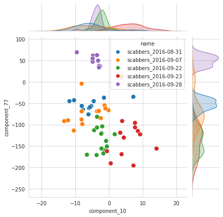
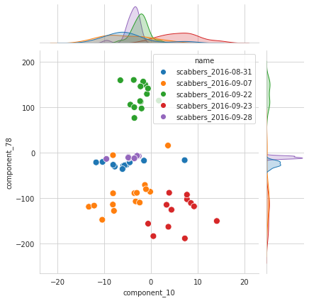
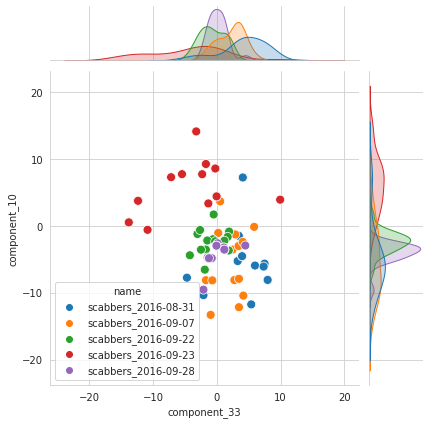
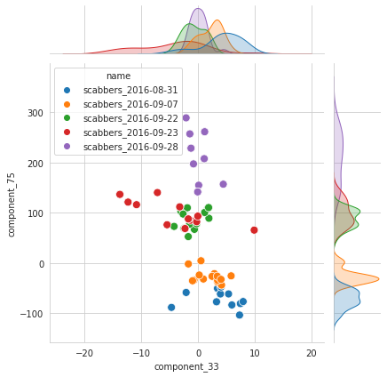
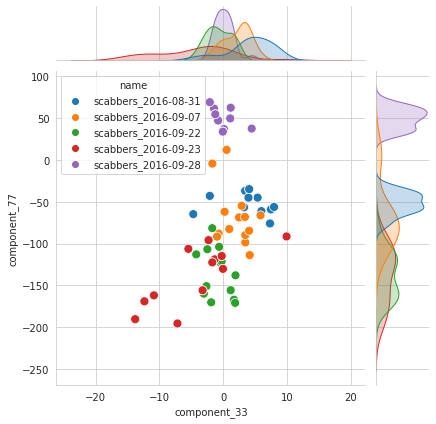
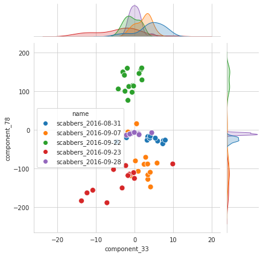
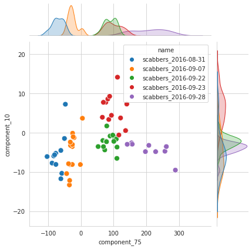
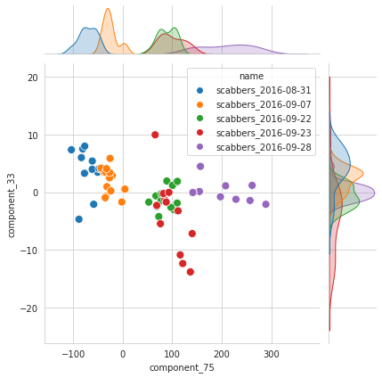
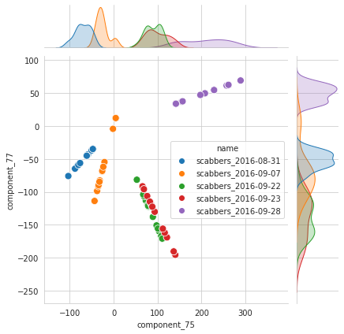
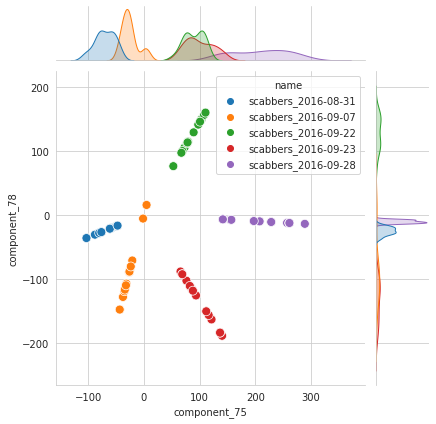
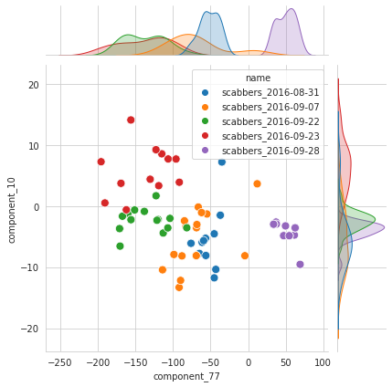
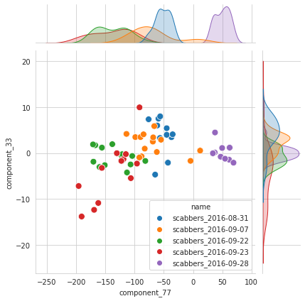
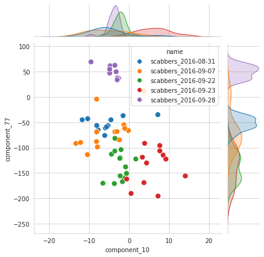
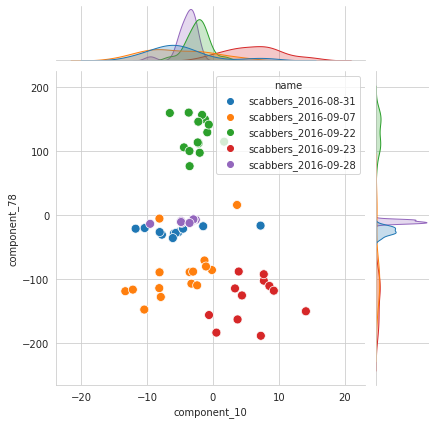
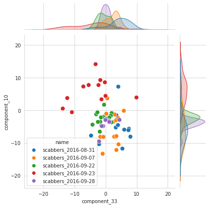
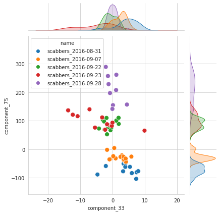
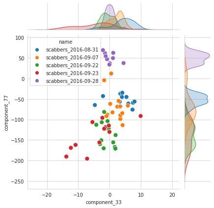
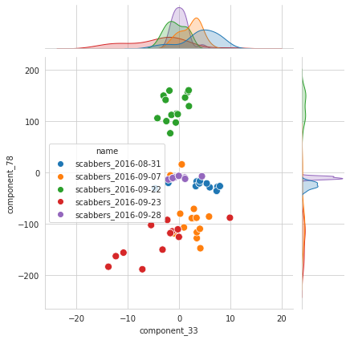
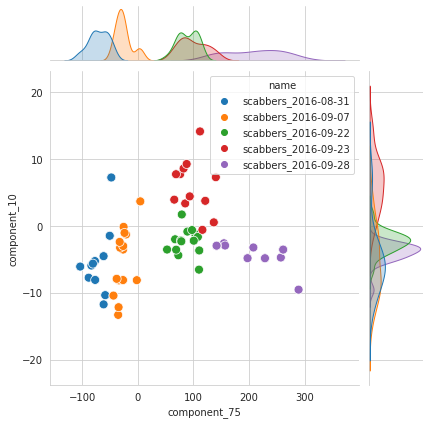
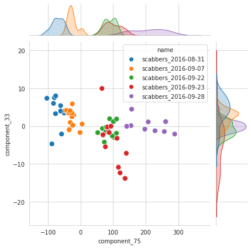
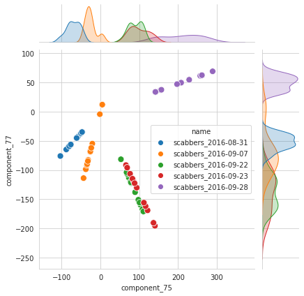
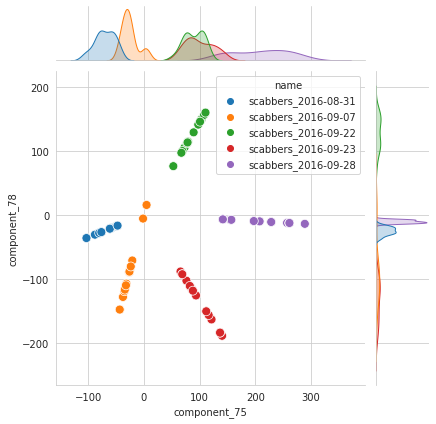
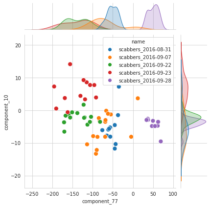
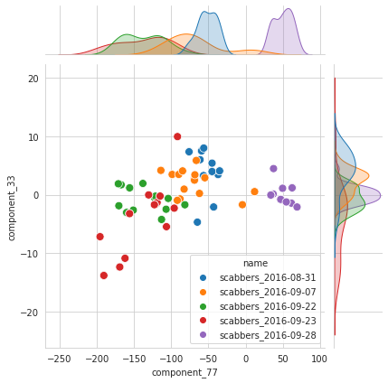
 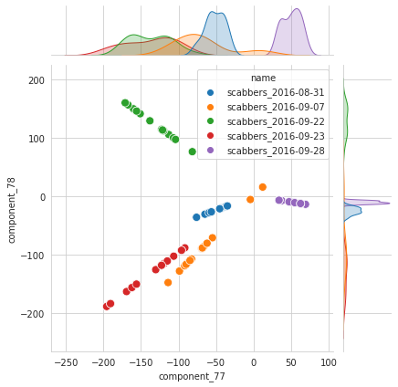
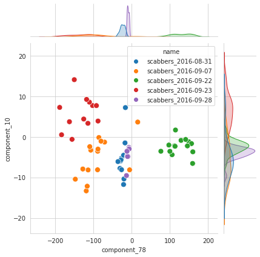
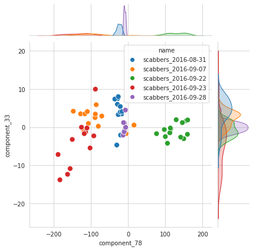
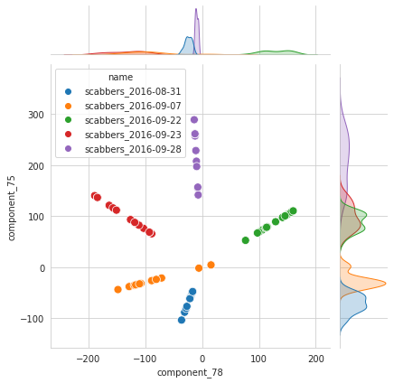
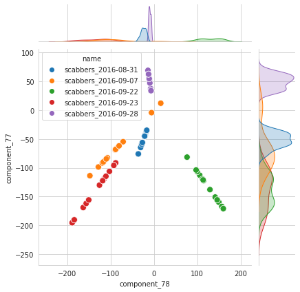
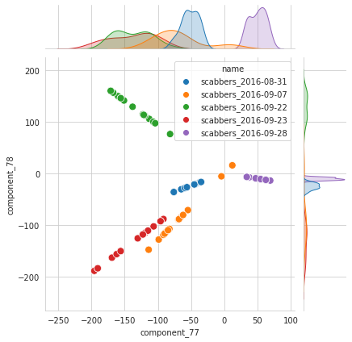
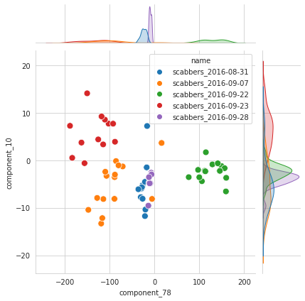
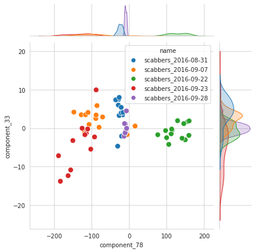
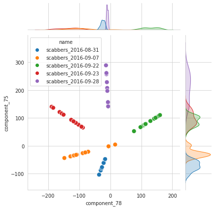
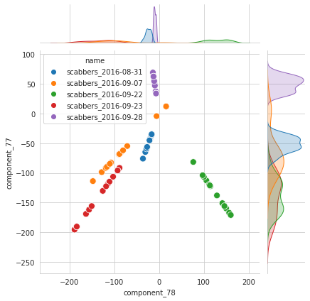
plt.plot(output['comps_tst'][:, 78])
plt.plot(output['comps_tst'][:, 77])
[<matplotlib.lines.Line2D at 0x7f008e628670>]
plt.plot(output['cca'].ws[0][:, 78])
plt.plot(output['cca'].ws[0][:, 77])
[<matplotlib.lines.Line2D at 0x7f008bf84f10>]
cell = np.argmin(output['cca'].ws[0][:, 77])
cell
52
x = output['data_trn']['raw']['scabbers_2016-08-31']
y = output['data_trn']['labels']
x.shape, y.shape
((1, 81, 67), (405,))
output['data_trn'].keys()
dict_keys(['raw', 'processed', 'labels', 'df'])
ii = np.where(y[:81] == 1)[0]
plt.plot(x[0, :, cell])
plt.plot(ii, x[0, ii, cell])
[<matplotlib.lines.Line2D at 0x7f00881a1820>]
Compare to previous fits¶
dirs_dict = get_dirs()
run_dir = pjoin(dirs_dict['base_dir'], 'results/svm/v1_l1_full')
start = 30
end = 60
dir_name = next(filter(lambda x: "{:d}:{:d}".format(start, end) in x, os.listdir(run_dir)), None)
load_dir = pjoin(run_dir, dir_name)
df_all = load_dfs(load_dir)
_ = mk_boxplots(
df_all=df_all,
criterion='mcc',
start_time=start,
end_time=end,
figsize=(18, 7),
dpi=53,
)
selected_names = [
'scabbers_2016-08-31',
'scabbers_2016-09-07',
'scabbers_2016-09-22',
'scabbers_2016-09-23',
'scabbers_2016-09-28',
]
df_p = df_all['performances']
best_fixed_scores = []
best_overal_scores = []
for name in selected_names:
df = df_p.loc[
(df_p.name == name) &
(df_p.task == 'hit/miss') &
(df_p.timepoint == 45) &
(df_p.metric == 'mcc')]
fixed_time_best_score = df.groupby(['reg_C'], as_index=False).mean().score.max()
best_fixed_scores.append(fixed_time_best_score)
df = df_p.loc[
(df_p.name == name) &
(df_p.task == 'hit/miss') &
(df_p.metric == 'mcc')]
best_reg = df.best_reg.unique().item()
best_timepoint = df.best_timepoint.unique().item()
_df = df.loc[(df.reg_C == best_reg) & (df.timepoint == best_timepoint)]
best_score = _df.score.mean()
best_overal_scores.append(best_score)
best_fixed_scores.append(fixed_time_best_score)
print(name, best_reg, best_timepoint, best_score, fixed_time_best_score)
print('\n\n', np.mean(best_overal_scores), np.mean(best_fixed_scores))
scabbers_2016-08-31 0.008 47 0.419216017507648 0.26936274702822705
scabbers_2016-09-07 0.003 50 0.7941795037550132 0.6615147511217525
scabbers_2016-09-22 0.05 41 0.9384437310486347 1.0
scabbers_2016-09-23 0.005 53 0.6478695440266765 0.6654665838405287
scabbers_2016-09-28 0.008 52 0.6536971191909041 0.43696813250814087
0.6906811831057753 0.6066624428997298
args.keys()
dict_keys(['seeds', 'min_nb_trials', 'target', 'global_normalize', 'augment_data', 'xv_folds', 'time_range', 'num_ccs', 'cca_regs', 'clf_regs', 'clf_max_iter', 'clf_tol'])
Lower threshold¶
results, best, args = fit_cca_loop(
h_load_file=dirs_dict['h_load_file'],
save_file='./min_nb_trials=50.df',
n_seeds=3,
min_nb_trials=50,
num_ccs=np.arange(1, 90, 1),
cca_regs=np.logspace(-4, 0, 20),
clf_regs=np.logspace(-4, -1, 20),
)
best hyperparams:
n_components: 75,
cca_reg: 1.000e-04,
clf_reg: 3.793e-03,
score: 0.4924
sns.set_style('whitegrid')
plt.figure(figsize=(12, 5))
selected_df = results.loc[(results.cca_reg == best['cca_reg']) & (results.clf_reg == best['clf_reg'])]
sns.lineplot(data=selected_df, x='n_components', y='value', hue='metric',
style='metric', markers=True, dashes=False, lw=2, markersize=5)
plt.xticks([item for item in args['num_ccs'] if item % 5 == 0])
plt.axvline(best['n_component'], ls=':', color='k', alpha=0.7)
plt.legend(loc='lower right')
msg = 'best # components: {:d}\n'
msg += 'best avg performance: i) mcc = {:.3f}, ii) balanced accuracy = {:.3f}'
avg_mcc = selected_df.loc[(selected_df.metric == 'mcc') &
(selected_df.n_components == best['n_component'])].value.mean()
avg_balacc = selected_df.loc[(selected_df.metric == 'bal_acc') &
(selected_df.n_components == best['n_component'])].value.mean()
msg = msg.format(best['n_component'], avg_mcc, avg_balacc)
plt.suptitle(msg, fontsize=12, y=1.02)
plt.tight_layout()
plt.show()
components_to_plot = [59, 64, 70, 75, 80, 85]
fig, axes = plt.subplots(3, len(components_to_plot), figsize=(13, 6))
for idx, cc in enumerate(components_to_plot):
selected_df = results.loc[(results.n_components == cc) & (results.metric == 'mcc')]
df = selected_df.groupby(['cca_reg', 'clf_reg'], as_index=False).mean()
df = df.pivot(index='cca_reg', columns=['clf_reg'], values='value')
sns.heatmap(data=df, xticklabels=False, yticklabels=False, vmin=0, vmax=best['score'], ax=axes[0, idx])
axes[0, idx].set_title('# components = {:d}'.format(cc))
axes[0, idx].set_aspect('equal')
for i in range(2):
a = df.mean(i)
axes[i+1, idx].plot(a, lw=3)
axes[i+1, idx].axvline(a.index[a.argmax()], lw=2, ls='--', color='tomato')
axes[i+1, idx].set_xlabel(a.index.name)
axes[i+1, idx].set_xscale('log')
fig.tight_layout()
plt.show()
— New!¶
results, best, args = fit_cca_loop(
h_load_file=dirs_dict['h_load_file'],
save_file='./min_nb_trials=30.df',
n_seeds=3,
min_nb_trials=30,
num_ccs=range(70, 85),
cca_regs=np.logspace(-8, 0, 30),
clf_regs=np.logspace(-5, -1, 30),
)
/home/hadi/.local/lib/python3.8/site-packages/sklearn/svm/_base.py:985: ConvergenceWarning: Liblinear failed to converge, increase the number of iterations.
warnings.warn("Liblinear failed to converge, increase "
/home/hadi/.local/lib/python3.8/site-packages/sklearn/svm/_base.py:985: ConvergenceWarning: Liblinear failed to converge, increase the number of iterations.
warnings.warn("Liblinear failed to converge, increase "
output_trn, output_tst = prepare_cca_data(
h_load_file=dirs_dict['h_load_file'],
min_nb_trials=50,
target=True,
global_normalize=True,
augment_data=False,
xv_folds=5,
which_fold=0,
time_range=range(45, 46),
verbose=True,
)
gabby_2016-08-20 (135, 75, 49)
gabby_2016-08-21 (135, 84, 59)
gabby_2016-08-22 (135, 60, 78)
gabby_2016-08-24 (135, 73, 85)
gabby_2016-09-07 (135, 68, 52)
ken_2016-08-20 (135, 65, 54)
ken_2016-08-21 (135, 84, 82)
ken_2016-08-24 (135, 70, 77)
ken_2016-09-22 (135, 74, 68)
ken_2016-09-23 (135, 62, 62)
scabbers_2016-08-18 (135, 68, 46)
scabbers_2016-08-22 (135, 73, 50)
scabbers_2016-08-24 (135, 62, 52)
scabbers_2016-08-31 (135, 100, 67)
scabbers_2016-09-07 (135, 124, 65)
scabbers_2016-09-22 (135, 133, 73)
scabbers_2016-09-23 (135, 110, 62)
scabbers_2016-09-28 (135, 134, 52)
{k: v.shape for k, v in output_trn['raw'].items()}
{'gabby_2016-08-20': (1, 62, 49),
'gabby_2016-08-21': (1, 68, 59),
'gabby_2016-08-22': (1, 50, 78),
'gabby_2016-08-24': (1, 60, 85),
'gabby_2016-09-07': (1, 56, 52),
'ken_2016-08-20': (1, 54, 54),
'ken_2016-08-21': (1, 68, 82),
'ken_2016-08-24': (1, 57, 77),
'ken_2016-09-22': (1, 61, 68),
'ken_2016-09-23': (1, 52, 62),
'scabbers_2016-08-18': (1, 56, 46),
'scabbers_2016-08-22': (1, 60, 50),
'scabbers_2016-08-24': (1, 51, 52),
'scabbers_2016-08-31': (1, 81, 67),
'scabbers_2016-09-07': (1, 101, 65),
'scabbers_2016-09-22': (1, 108, 73),
'scabbers_2016-09-23': (1, 89, 62),
'scabbers_2016-09-28': (1, 109, 52)}
df_p = df_all['performances']
best_fixed_scores = []
best_overal_scores = []
for name in output_trn['raw'].keys():
df = df_p.loc[
(df_p.name == name) &
(df_p.task == 'hit/miss') &
(df_p.timepoint == 45) &
(df_p.metric == 'mcc')]
fixed_time_best_score = df.groupby(['reg_C'], as_index=False).mean().score.max()
best_fixed_scores.append(fixed_time_best_score)
df = df_p.loc[
(df_p.name == name) &
(df_p.task == 'hit/miss') &
(df_p.metric == 'mcc')]
best_reg = df.best_reg.unique().item()
best_timepoint = df.best_timepoint.unique().item()
_df = df.loc[(df.reg_C == best_reg) & (df.timepoint == best_timepoint)]
best_score = _df.score.mean()
best_overal_scores.append(best_score)
best_fixed_scores.append(fixed_time_best_score)
print(name, best_reg, best_timepoint, best_score, fixed_time_best_score)
print('\n\n', np.mean(best_overal_scores), np.mean(best_fixed_scores))
gabby_2016-08-20 0.05 45 0.8696799449852968 0.8696799449852968
gabby_2016-08-21 0.005 48 0.45590267869953394 0.3333004673197818
gabby_2016-08-22 0.003 59 0.8834733547569205 0.6645751311064589
gabby_2016-08-24 0.008 56 0.4211047478842489 0.0034483090333273735
gabby_2016-09-07 0.003 41 0.6037361629862457 0.45825756949558405
ken_2016-08-20 0.005 54 0.6036700308869263 0.4
ken_2016-08-21 0.005 43 0.6766640336771411 0.65033937904748
ken_2016-08-24 0.0008 42 0.6414104402550318 0.6377900070463604
ken_2016-09-22 0.008 45 0.4776617392146205 0.4920056583229385
ken_2016-09-23 1.0 54 0.7348399724926484 0.3166581543108302
scabbers_2016-08-18 0.008 48 0.8696799449852968 0.6478108293414642
scabbers_2016-08-22 0.008 59 0.9527525231651947 0.561085856498528
scabbers_2016-08-24 0.008 34 0.3462794598879075 0.30183501544346314
scabbers_2016-08-31 0.008 47 0.419216017507648 0.26936274702822705
scabbers_2016-09-07 0.003 50 0.7941795037550132 0.6615147511217525
scabbers_2016-09-22 0.05 41 0.9384437310486347 1.0
scabbers_2016-09-23 0.005 53 0.6478695440266765 0.6654665838405287
scabbers_2016-09-28 0.008 52 0.6536971191909041 0.43696813250814087
0.6661256083003271 0.520561029802787
Study clf coefficients¶
fold = 2
output_trn, output_tst = prepare_cca_data(
h_load_file=dirs_dict['h_load_file'],
min_nb_trials=50,
target=True,
global_normalize=True,
augment_data=False,
xv_folds=5,
which_fold=fold,
time_range=range(45, 46),
verbose=False,
)
train_list, y_trn = output_trn['processed'], output_trn['labels']
test_list, y_tst = output_tst['processed'], output_tst['labels']
cca = rcca.CCA(
kernelcca=True,
ktype='linear',
reg=best['cca_reg'],
numCC=best['n_component'],
verbose=False,
)
cca.train([item / np.sqrt(best['n_component']) for item in train_list])
testcorrs = cca.validate(test_list)
corrs = []
for item in testcorrs:
corrs.append(np.mean(np.abs(item)))
pred_r = np.mean(corrs)
x_trn = [x @ w for x, w in zip(train_list, cca.ws)]
x_tst = [x @ w for x, w in zip(test_list, cca.ws)]
x_trn, x_tst = tuple(map(np.concatenate, [x_trn, x_tst]))
clf = LogisticRegression(
random_state=42,
penalty='l1',
C=best['clf_reg'],
solver='liblinear',
class_weight='balanced',
max_iter=int(1e4),
tol=1e-6,
).fit(x_trn, y_trn)
y_pred = clf.predict(x_tst)
balacc = balanced_accuracy_score(y_tst, y_pred)
mcc = matthews_corrcoef(y_tst, y_pred)
pred_r, balacc, mcc
(0.2863303003962716, 0.7400815721171672, 0.4995561662691966)
coeffs = clf.coef_.flatten()
coeffs
array([ 0. , 0. , 0. , 0. , 0. ,
0. , 0. , 0. , 0. , 0. ,
0. , 0. , 0. , 0. , 0. ,
0. , 0. , 0. , 0. , 0. ,
0. , 0. , 0. , 0. , 0. ,
0. , 0. , 0. , 0. , 0. ,
0. , 0. , 0. , 0. , 0. ,
0. , 0. , 0. , 0. , 0. ,
0. , 0. , -0.01151475, 0. , 0. ,
0. , 0. , 0. , 0. , 0.00149195,
-0.00075647, -0.00104831, 0.00441885, 0.00337783, 0.00174549,
-0.00098892, -0.00041472, -0.00517937, 0.00292418, 0.00356777,
-0.00365974, -0.00013444, -0.00369978, 0. , -0.00248861,
0.00098472, 0. , 0.00117524, 0. , -0.00433664,
0. , 0. , 0. , 0. , 0. ])
sns.set_style('whitegrid')
plt.plot(coeffs)
nonzero_comps = np.where(coeffs != 0)[0]
plt.show()
nonzero_comps
array([42, 49, 50, 51, 52, 53, 54, 55, 56, 57, 58, 59, 60, 61, 62, 64, 65,
67, 69])
sns.set_style('whitegrid')
nrows = 4
ncols = int(np.ceil(len(nonzero_comps) / nrows))
fig, axes = plt.subplots(nrows, ncols, figsize=(13, 9), sharex='all', sharey='none')
for idx, cc in enumerate(nonzero_comps):
i, j = idx // ncols, idx % ncols
for expt_id, w in enumerate(cca.ws):
axes[i, j].plot(sorted(w[:, cc]), lw=2, label='expt {:d}'.format(expt_id))
axes[i, j].axhline(0, color='k', lw=2, ls=':')
# axes[i, j].legend(loc='lower right')
msg = 'component # {:d}\ncontribution: {:.1f} {:s}'
msg = msg.format(cc, abs(coeffs[cc]) / sum(abs(coeffs)) * 100, '%')
axes[i, j].set_title(msg, fontsize=13)
fig.tight_layout()
plt.show()
comps = np.concatenate(cca.comps)
comps.shape
(900, 75)
palette = sns.color_palette("Accent", n_colors=len(nonzero_comps))
sns.set_style('whitegrid')
fig, axes = plt.subplots(2, 2, figsize=(13, 8), sharex='all', sharey='none')
_data = comps[:, nonzero_comps]
_data_smooth = smoothen(_data.T, filter_sz=10).T
ln = sns.lineplot(data=_data, palette=palette,
dashes=False, legend=False, ax=axes[0, 0])
ln = sns.lineplot(data=normalize(_data, axis=0), palette=palette,
dashes=False, legend=False, ax=axes[0, 1])
ln = sns.lineplot(data=_data_smooth, palette=palette, lw=2,
dashes=False, legend=False, ax=axes[1, 0])
ln = sns.lineplot(data=normalize(_data_smooth, axis=0), palette=palette, lw=2,
dashes=False, legend=False, ax=axes[1, 1])
fig.tight_layout()
plt.show()
sns.set_style('whitegrid')
fig, axes = plt.subplots(2, 2, figsize=(13, 8), sharex='all', sharey='none')
rng = np.random.RandomState(42)
zero_comps = np.where(coeffs == 0)[0]
random_components = rng.choice(zero_comps, size=len(nonzero_comps), replace=False)
_data = comps[:, random_components]
_data_smooth = smoothen(_data.T, filter_sz=10).T
ln = sns.lineplot(data=_data, palette=palette,
dashes=False, legend=False, ax=axes[0, 0])
ln = sns.lineplot(data=normalize(_data, axis=0), palette=palette,
dashes=False, legend=False, ax=axes[0, 1])
ln = sns.lineplot(data=_data_smooth, palette=palette, lw=2,
dashes=False, legend=False, ax=axes[1, 0])
ln = sns.lineplot(data=normalize(_data_smooth, axis=0), palette=palette, lw=2,
dashes=False, legend=False, ax=axes[1, 1])
fig.tight_layout()
plt.show()
palette = sns.color_palette("Accent", n_colors=5)
plt.figure(figsize=(12, 8))
sns.lineplot(data=comps[:, 20:25], palette=palette, legend='brief', dashes=False);
comps_tst = [x @ w for x, w in zip(output_tst['processed'], cca.ws)]
comps_tst = np.concatenate(comps_tst)
comps_tst.shape
(180, 75)
palette = sns.color_palette("Accent", n_colors=len(nonzero_comps))
sns.set_style('whitegrid')
fig, axes = plt.subplots(2, 2, figsize=(13, 8), sharex='all', sharey='none')
_data = comps_tst[:, nonzero_comps]
_data_smooth = smoothen(_data.T, filter_sz=4).T
ln = sns.lineplot(data=_data, palette=palette,
dashes=False, legend=False, ax=axes[0, 0])
ln = sns.lineplot(data=normalize(_data, axis=0), palette=palette,
dashes=False, legend=False, ax=axes[0, 1])
ln = sns.lineplot(data=_data_smooth, palette=palette, lw=2,
dashes=False, legend=False, ax=axes[1, 0])
ln = sns.lineplot(data=normalize(_data_smooth, axis=0), palette=palette, lw=2,
dashes=False, legend=False, ax=axes[1, 1])
fig.tight_layout()
plt.show()
Best r and mcc¶
best_r = extract_best_hyperparams(results, metric='pred_r')
best hyperparams:
n_components: 75,
cca_reg: 1.000e-06,
clf_reg: 1.000e-04,
score: 0.2768
best_r_mcc = extract_best_hyperparams(
results.loc[
(results.n_components == best_r['n_component']) &
(results.cca_reg == best_r['cca_reg'])],
metric='mcc',
)
best hyperparams:
n_components: 75,
cca_reg: 1.000e-06,
clf_reg: 1.000e-04,
score: 0.4879
results = pd.read_pickle('./min_nb_trials=50_precision.df')
sns.set_style('whitegrid')
plt.figure(figsize=(5, 4))
selected_df = results.loc[(results.cca_reg == best_r_mcc['cca_reg']) & (results.clf_reg == best_r_mcc['clf_reg'])]
sns.lineplot(data=selected_df, x='n_components', y='value', hue='metric',
style='metric', markers=True, dashes=False, lw=2, markersize=5)
plt.xticks([item for item in args['num_ccs'] if item % 5 == 0])
plt.axvline(best_r_mcc['n_component'], ls=':', color='k', alpha=0.7)
plt.legend(loc='lower right')
msg = 'best # components: {:d}, avg correlation = {:.3f}\n'
msg += 'best avg performance: i) mcc = {:.3f}, ii) balanced accuracy = {:.3f}'
avg_r = selected_df.loc[(selected_df.metric == 'pred_r') &
(selected_df.n_components == best_r_mcc['n_component'])].value.mean()
avg_mcc = selected_df.loc[(selected_df.metric == 'mcc') &
(selected_df.n_components == best_r_mcc['n_component'])].value.mean()
avg_balacc = selected_df.loc[(selected_df.metric == 'bal_acc') &
(selected_df.n_components == best_r_mcc['n_component'])].value.mean()
msg = msg.format(best_r_mcc['n_component'], avg_r, avg_mcc, avg_balacc)
plt.suptitle(msg, fontsize=12, y=1.02)
plt.tight_layout()
plt.show()
output_trn, output_tst = prepare_cca_data(
h_load_file=dirs_dict['h_load_file'],
min_nb_trials=50,
target=True,
global_normalize=True,
augment_data=False,
xv_folds=5,
which_fold=0,
time_range=range(45, 46),
verbose=True,
)
gabby_2016-08-20 (135, 75, 49)
gabby_2016-08-21 (135, 84, 59)
gabby_2016-08-22 (135, 60, 78)
gabby_2016-08-24 (135, 73, 85)
gabby_2016-09-07 (135, 68, 52)
ken_2016-08-20 (135, 65, 54)
ken_2016-08-21 (135, 84, 82)
ken_2016-08-24 (135, 70, 77)
ken_2016-09-22 (135, 74, 68)
ken_2016-09-23 (135, 62, 62)
scabbers_2016-08-18 (135, 68, 46)
scabbers_2016-08-22 (135, 73, 50)
scabbers_2016-08-24 (135, 62, 52)
scabbers_2016-08-31 (135, 100, 67)
scabbers_2016-09-07 (135, 124, 65)
scabbers_2016-09-22 (135, 133, 73)
scabbers_2016-09-23 (135, 110, 62)
scabbers_2016-09-28 (135, 134, 52)
{k: v.shape for k, v in output_trn['raw'].items()}
{'gabby_2016-08-20': (1, 62, 49),
'gabby_2016-08-21': (1, 68, 59),
'gabby_2016-08-22': (1, 50, 78),
'gabby_2016-08-24': (1, 60, 85),
'gabby_2016-09-07': (1, 56, 52),
'ken_2016-08-20': (1, 54, 54),
'ken_2016-08-21': (1, 68, 82),
'ken_2016-08-24': (1, 57, 77),
'ken_2016-09-22': (1, 61, 68),
'ken_2016-09-23': (1, 52, 62),
'scabbers_2016-08-18': (1, 56, 46),
'scabbers_2016-08-22': (1, 60, 50),
'scabbers_2016-08-24': (1, 51, 52),
'scabbers_2016-08-31': (1, 81, 67),
'scabbers_2016-09-07': (1, 101, 65),
'scabbers_2016-09-22': (1, 108, 73),
'scabbers_2016-09-23': (1, 89, 62),
'scabbers_2016-09-28': (1, 109, 52)}
df_p = df_all['performances']
best_fixed_scores = []
best_overal_scores = []
for name in output_trn['raw'].keys():
df = df_p.loc[
(df_p.name == name) &
(df_p.task == 'hit/miss') &
(df_p.timepoint == 45) &
(df_p.metric == 'mcc')]
fixed_time_best_score = df.groupby(['reg_C'], as_index=False).mean().score.max()
best_fixed_scores.append(fixed_time_best_score)
df = df_p.loc[
(df_p.name == name) &
(df_p.task == 'hit/miss') &
(df_p.metric == 'mcc')]
best_reg = df.best_reg.unique().item()
best_timepoint = df.best_timepoint.unique().item()
_df = df.loc[(df.reg_C == best_reg) & (df.timepoint == best_timepoint)]
best_score = _df.score.mean()
best_overal_scores.append(best_score)
best_fixed_scores.append(fixed_time_best_score)
print(name, best_reg, best_timepoint, best_score, fixed_time_best_score)
print('\n\n', np.mean(best_overal_scores), np.mean(best_fixed_scores))
gabby_2016-08-20 0.05 45 0.8696799449852968 0.8696799449852968
gabby_2016-08-21 0.005 48 0.45590267869953394 0.3333004673197818
gabby_2016-08-22 0.003 59 0.8834733547569205 0.6645751311064589
gabby_2016-08-24 0.008 56 0.4211047478842489 0.0034483090333273735
gabby_2016-09-07 0.003 41 0.6037361629862457 0.45825756949558405
ken_2016-08-20 0.005 54 0.6036700308869263 0.4
ken_2016-08-21 0.005 43 0.6766640336771411 0.65033937904748
ken_2016-08-24 0.0008 42 0.6414104402550318 0.6377900070463604
ken_2016-09-22 0.008 45 0.4776617392146205 0.4920056583229385
ken_2016-09-23 1.0 54 0.7348399724926484 0.3166581543108302
scabbers_2016-08-18 0.008 48 0.8696799449852968 0.6478108293414642
scabbers_2016-08-22 0.008 59 0.9527525231651947 0.561085856498528
scabbers_2016-08-24 0.008 34 0.3462794598879075 0.30183501544346314
scabbers_2016-08-31 0.008 47 0.419216017507648 0.26936274702822705
scabbers_2016-09-07 0.003 50 0.7941795037550132 0.6615147511217525
scabbers_2016-09-22 0.05 41 0.9384437310486347 1.0
scabbers_2016-09-23 0.005 53 0.6478695440266765 0.6654665838405287
scabbers_2016-09-28 0.008 52 0.6536971191909041 0.43696813250814087
0.6661256083003271 0.520561029802787
Study clf coefficients¶
fold = 4
output_trn, output_tst = prepare_cca_data(
h_load_file=dirs_dict['h_load_file'],
min_nb_trials=50,
target=True,
global_normalize=True,
augment_data=False,
xv_folds=5,
which_fold=fold,
time_range=range(45, 46),
verbose=False,
)
train_list, y_trn = output_trn['processed'], output_trn['labels']
test_list, y_tst = output_tst['processed'], output_tst['labels']
cca = rcca.CCA(
kernelcca=True,
ktype='linear',
reg=best_r_mcc['cca_reg'],
numCC=best_r_mcc['n_component'],
verbose=False,
)
cca.train([item / np.sqrt(best_r_mcc['n_component']) for item in train_list])
testcorrs = cca.validate(test_list)
corrs = []
for item in testcorrs:
corrs.append(np.mean(np.abs(item)))
pred_r = np.mean(corrs)
x_trn = [x @ w for x, w in zip(train_list, cca.ws)]
x_tst = [x @ w for x, w in zip(test_list, cca.ws)]
x_trn, x_tst = tuple(map(np.concatenate, [x_trn, x_tst]))
clf = LogisticRegression(
random_state=42,
penalty='l1',
C=best_r_mcc['clf_reg'],
solver='liblinear',
class_weight='balanced',
max_iter=int(1e4),
tol=1e-6,
).fit(x_trn, y_trn)
y_pred = clf.predict(x_tst)
balacc = balanced_accuracy_score(y_tst, y_pred)
mcc = matthews_corrcoef(y_tst, y_pred)
pred_r, balacc, mcc
(0.26529376053263953, 0.7332220986281053, 0.49877753333740393)
coeffs = clf.coef_.flatten()
coeffs
array([ 0.00000000e+00, 0.00000000e+00, 0.00000000e+00, 0.00000000e+00,
0.00000000e+00, 0.00000000e+00, 0.00000000e+00, 0.00000000e+00,
0.00000000e+00, 0.00000000e+00, 0.00000000e+00, 0.00000000e+00,
0.00000000e+00, 0.00000000e+00, 0.00000000e+00, 0.00000000e+00,
0.00000000e+00, 0.00000000e+00, 0.00000000e+00, 0.00000000e+00,
0.00000000e+00, 0.00000000e+00, 0.00000000e+00, 0.00000000e+00,
0.00000000e+00, 0.00000000e+00, 0.00000000e+00, 0.00000000e+00,
0.00000000e+00, 0.00000000e+00, 0.00000000e+00, 0.00000000e+00,
0.00000000e+00, 0.00000000e+00, 0.00000000e+00, 0.00000000e+00,
0.00000000e+00, 0.00000000e+00, 0.00000000e+00, 0.00000000e+00,
0.00000000e+00, 0.00000000e+00, 0.00000000e+00, 0.00000000e+00,
0.00000000e+00, 0.00000000e+00, 0.00000000e+00, 0.00000000e+00,
0.00000000e+00, 6.18601605e-05, 1.22338249e-04, 2.11300017e-05,
-4.91994579e-05, -1.23722812e-04, 4.63722631e-05, 5.82920401e-05,
-1.53105680e-04, 3.67949631e-05, 2.02557817e-05, -1.01185732e-04,
1.63409583e-04, 1.23293859e-05, -1.29933387e-04, -2.48831625e-04,
0.00000000e+00, 0.00000000e+00, -3.38322000e-05, 0.00000000e+00,
0.00000000e+00, -1.22036840e-04, 0.00000000e+00, 0.00000000e+00,
0.00000000e+00, -1.17124056e-04, 0.00000000e+00])
sns.set_style('whitegrid')
plt.plot(coeffs)
nonzero_comps = np.where(coeffs != 0)[0]
plt.show()
nonzero_comps
array([49, 50, 51, 52, 53, 54, 55, 56, 57, 58, 59, 60, 61, 62, 63, 66, 69,
73])
sns.set_style('whitegrid')
nrows = 4
ncols = int(np.ceil(len(nonzero_comps) / nrows))
fig, axes = plt.subplots(nrows, ncols, figsize=(13, 9), sharex='all', sharey='none')
for idx, cc in enumerate(nonzero_comps):
i, j = idx // ncols, idx % ncols
for expt_id, w in enumerate(cca.ws):
axes[i, j].plot(sorted(w[:, cc]), lw=2, label='expt {:d}'.format(expt_id))
axes[i, j].axhline(0, color='k', lw=2, ls=':')
# axes[i, j].legend(loc='lower right')
msg = 'component # {:d}\ncontribution: {:.1f} {:s}'
msg = msg.format(cc, abs(coeffs[cc]) / sum(abs(coeffs)) * 100, '%')
axes[i, j].set_title(msg, fontsize=13)
fig.tight_layout()
plt.show()
comps = np.concatenate(cca.comps)
comps.shape
(900, 75)
palette = sns.color_palette("Accent", n_colors=len(nonzero_comps))
sns.set_style('whitegrid')
fig, axes = plt.subplots(2, 2, figsize=(13, 8), sharex='all', sharey='none')
_data = comps[:, nonzero_comps]
_data_smooth = smoothen(_data.T, filter_sz=10).T
ln = sns.lineplot(data=_data, palette=palette,
dashes=False, legend=False, ax=axes[0, 0])
ln = sns.lineplot(data=normalize(_data, axis=0), palette=palette,
dashes=False, legend=False, ax=axes[0, 1])
ln = sns.lineplot(data=_data_smooth, palette=palette, lw=2,
dashes=False, legend=False, ax=axes[1, 0])
ln = sns.lineplot(data=normalize(_data_smooth, axis=0), palette=palette, lw=2,
dashes=False, legend=False, ax=axes[1, 1])
fig.tight_layout()
plt.show()
sns.set_style('whitegrid')
fig, axes = plt.subplots(2, 2, figsize=(13, 8), sharex='all', sharey='none')
rng = np.random.RandomState(42)
zero_comps = np.where(coeffs == 0)[0]
random_components = rng.choice(zero_comps, size=len(nonzero_comps), replace=False)
_data = comps[:, random_components]
_data_smooth = smoothen(_data.T, filter_sz=10).T
ln = sns.lineplot(data=_data, palette=palette,
dashes=False, legend=False, ax=axes[0, 0])
ln = sns.lineplot(data=normalize(_data, axis=0), palette=palette,
dashes=False, legend=False, ax=axes[0, 1])
ln = sns.lineplot(data=_data_smooth, palette=palette, lw=2,
dashes=False, legend=False, ax=axes[1, 0])
ln = sns.lineplot(data=normalize(_data_smooth, axis=0), palette=palette, lw=2,
dashes=False, legend=False, ax=axes[1, 1])
fig.tight_layout()
plt.show()
palette = sns.color_palette("Accent", n_colors=10)
plt.figure(figsize=(12, 8))
sns.lineplot(data=comps[:, :10], palette=palette, legend='brief', dashes=False);
comps_tst = [x @ w for x, w in zip(output_tst['processed'], cca.ws)]
comps_tst = np.concatenate(comps_tst)
comps_tst.shape
(180, 75)
palette = sns.color_palette("Accent", n_colors=len(nonzero_comps))
sns.set_style('whitegrid')
fig, axes = plt.subplots(2, 2, figsize=(13, 8), sharex='all', sharey='none')
_data = comps_tst[:, nonzero_comps]
_data_smooth = smoothen(_data.T, filter_sz=5).T
ln = sns.lineplot(data=_data, palette=palette,
dashes=False, legend=False, ax=axes[0, 0])
ln = sns.lineplot(data=normalize(_data, axis=0), palette=palette,
dashes=False, legend=False, ax=axes[0, 1])
ln = sns.lineplot(data=_data_smooth, palette=palette, lw=2,
dashes=False, legend=False, ax=axes[1, 0])
ln = sns.lineplot(data=normalize(_data_smooth, axis=0), palette=palette, lw=2,
dashes=False, legend=False, ax=axes[1, 1])
fig.tight_layout()
plt.show()
Draft (ignore below this line)¶
def augment_data(
x: np.ndarray,
y: np.ndarray,
nb_end_samples: int,
sigma: float = 1.0,
rng: np.random.RandomState = None,):
nb_samples, nb_features = x.shape
if nb_end_samples - nb_samples <= 0:
output = {
'x_aug': x[:nb_end_samples],
'y_aug': y[:nb_end_samples],
'noise': None,
'indxs': None,
}
return output
else:
nb_repeats, nb_extra_samples = nb_end_samples//nb_samples, nb_end_samples%nb_samples
indxs = np.arange(nb_samples)
x_aug, y_aug = tuple(map(dc, [x, y]))
for _ in range(1, nb_repeats):
indxs = np.concatenate([indxs, np.arange(nb_samples)])
x_aug = np.concatenate([x_aug, x])
y_aug = np.concatenate([y_aug, y])
rng = np.random.RandomState(42) if rng is None else rng
if nb_extra_samples > 0:
extra_indxs = rng.choice(range(nb_samples), size=nb_extra_samples, replace=True)
indxs = np.concatenate([indxs, extra_indxs])
x_aug = np.concatenate([x_aug, x[extra_indxs]])
y_aug = np.concatenate([y_aug, y[extra_indxs]])
noise = np.random.randn(*x_aug.shape) * x.std(0) * sigma
noise[:nb_samples] = 0.0
augmented = {
'x_aug': x_aug + noise,
'y_aug': y_aug,
'noise': noise,
'indxs': indxs,
}
return augmented
def prepare_data(
h_load_file: str,
timepoint: int = 45,
nb_min_samples: int = -1,
nb_end_samples: int = None,
augment: bool = False,
sigma: float = 0.0,
xv_folds: int = 10,
random_state: int = 42,):
raw_data = _load_target_nontarget(h_load_file)
rng = np.random.RandomState(random_state)
train_data, test_data = {}, {}
train_labels, test_labels = {}, {}
for key, val in raw_data['target_dffs'].items():
x = val[timepoint]
num_samples = len(x)
if num_samples < nb_min_samples:
continue
labels = raw_data['target_labels'][key]
if not augment:
x = x[:nb_min_samples]
labels = labels[:nb_min_samples]
### TODDO: floor or ceil?
pos_indxs = np.where(labels == 0)[0]
neg_indxs = np.where(labels == 1)[0]
pos_tst_indxs = rng.choice(pos_indxs, size=int(np.ceil(len(pos_indxs)/xv_folds)), replace=False)
neg_tst_indxs = rng.choice(neg_indxs, size=int(np.ceil(len(neg_indxs)/xv_folds)), replace=False)
tst_indxs = np.concatenate([pos_tst_indxs, neg_tst_indxs])
trn_indxs = np.delete(range(len(labels)), tst_indxs)
assert not set(tst_indxs).intersection(set(trn_indxs))
test_data[key] = x[tst_indxs]
train_data[key] = x[trn_indxs]
test_labels[key] = labels[tst_indxs]
train_labels[key] = labels[trn_indxs]
aug_train_data = {}
aug_train_labels = {}
if augment:
for key, x in train_data.items():
y = train_labels[key]
augmented = augment_data(
x=x,
y=y,
nb_end_samples=nb_end_samples,
sigma=sigma,
rng=rng,
)
aug_train_data[key] = augmented['x_aug']
aug_train_labels[key] = augmented['y_aug']
output = {
'aug_train_data': aug_train_data,
'aug_train_labels': aug_train_labels,
'train_data': train_data,
'train_labels': train_labels,
'test_data': test_data,
'test_labels': test_labels,
}
return output
[item.shape for item in a['target_freqs'].values()]
[(23,),
(30,),
(75,),
(84,),
(60,),
(73,),
(68,),
(19,),
(12,),
(41,),
(25,),
(28,),
(65,),
(84,),
(18,),
(70,),
(21,),
(74,),
(62,),
(38,),
(31,),
(23,),
(43,),
(49,),
(33,),
(30,),
(68,),
(73,),
(62,),
(100,),
(124,),
(133,),
(110,),
(134,)]
import rcca
from sklearn.linear_model import LogisticRegression
from sklearn.metrics import balanced_accuracy_score, matthews_corrcoef, f1_score
import random
from tqdm.notebook import tqdm
max_components = 100
seeds = [np.power(2, i) for i in range(30)]
seeds += [42]
results = pd.DataFrame()
for seed in tqdm(seeds):
random.seed(seed)
np.random.seed(seed)
output = prepare_data(
h_load_file=dirs_dict['h_load_file'],
timepoint=45,
augment=False,
nb_min_samples=100,
random_state=seed,
)
train_data = output['train_data']
train_labels = output['train_labels']
test_data = output['test_data']
test_labels = output['test_labels']
for n_components in tqdm(range(1, max_components), leave=False):
cca = rcca.CCA(reg=1., numCC=n_components, verbose=False)
cca.train(list(train_data.values()))
ev = cca.compute_ev(list(test_data.values()))
x_trn = [x @ w for x, w in zip(train_data.values(), cca.ws)]
x_tst = [x @ w for x, w in zip(test_data.values(), cca.ws)]
y_trn = [item for item in train_labels.values()]
y_tst = [item for item in test_labels.values()]
x_trn, x_tst, y_trn, y_tst = tuple(map(np.concatenate, [x_trn, x_tst, y_trn, y_tst]))
clf = LogisticRegression(
random_state=seed,
penalty='l1',
C=1.,
solver='liblinear',
class_weight='balanced',
max_iter=int(1e6),
).fit(x_trn, y_trn)
y_pred = clf.predict(x_tst)
balacc = balanced_accuracy_score(y_tst, y_pred)
f1 = f1_score(y_tst, y_pred)
mcc = matthews_corrcoef(y_tst, y_pred)
data_dict = {
'seed': [seed] * 4,
'sigma': [np.nan] * 4,
'n_components': [n_components] * 4,
'metric': ['mcc', 'f1', 'balacc', 'ev'],
'value': [mcc, balacc, f1, np.mean([item.max(0).mean() for item in ev])],
}
results = pd.concat([results, pd.DataFrame.from_dict(data_dict)])
results = reset_df(results)
plt.figure(figsize=(10, 8))
sns.lineplot(data=results, x='n_components', y='value', hue='metric',
style='metric', markers=True, dashes=False, lw=2, markersize=5)
plt.ylabel('%')
plt.grid()
selected_df = results.loc[results.metric == 'mcc']
performance = selected_df.groupby('n_components').mean()
best_n_components = performance.iloc[performance.value.argmax()].name
selected_df = selected_df.loc[selected_df.n_components == best_n_components]
plt.axvline(best_n_components, ls=':', color='k', alpha=0.5)
msg = '# componens vs. explained variance (red curve), and classification performance \n'
msg += 'performance increases as we introduce more and more components, then gradually drops\n\n'
msg += 'best # components: {:d}\n'
msg += 'best avg performance: i) mcc = {:.3f}, ii) f1 score = {:.3f}, iii) balanced accuracy = {:.3f}'
avg_mcc = results.loc[(results.metric == 'mcc') & (results.n_components == best_n_components)].value.mean()
avg_f1 = results.loc[(results.metric == 'f1') & (results.n_components == best_n_components)].value.mean()
avg_balacc = results.loc[(results.metric == 'balacc') & (results.n_components == best_n_components)].value.mean()
msg = msg.format(best_n_components, avg_mcc, avg_f1, avg_balacc)
plt.suptitle(msg, fontsize=13, y=1.01)
plt.tight_layout()
plt.show()
selected_df
| seed | sigma | n_components | metric | value | |
|---|---|---|---|---|---|
| 116 | 1 | NaN | 30 | mcc | 0.382679 |
| 512 | 2 | NaN | 30 | mcc | 0.478061 |
| 908 | 4 | NaN | 30 | mcc | 0.488662 |
| 1304 | 8 | NaN | 30 | mcc | 0.368924 |
| 1700 | 16 | NaN | 30 | mcc | 0.382679 |
| 2096 | 32 | NaN | 30 | mcc | 0.392532 |
| 2492 | 64 | NaN | 30 | mcc | 0.482527 |
| 2888 | 128 | NaN | 30 | mcc | 0.448464 |
| 3284 | 256 | NaN | 30 | mcc | 0.309343 |
| 3680 | 512 | NaN | 30 | mcc | 0.341797 |
| 4076 | 1024 | NaN | 30 | mcc | 0.404570 |
| 4472 | 2048 | NaN | 30 | mcc | 0.644021 |
| 4868 | 4096 | NaN | 30 | mcc | 0.497349 |
| 5264 | 8192 | NaN | 30 | mcc | 0.488662 |
| 5660 | 16384 | NaN | 30 | mcc | 0.522093 |
| 6056 | 32768 | NaN | 30 | mcc | 0.435077 |
| 6452 | 65536 | NaN | 30 | mcc | 0.465965 |
| 6848 | 131072 | NaN | 30 | mcc | 0.204007 |
| 7244 | 262144 | NaN | 30 | mcc | 0.374836 |
| 7640 | 524288 | NaN | 30 | mcc | 0.404570 |
| 8036 | 1048576 | NaN | 30 | mcc | 0.552419 |
| 8432 | 2097152 | NaN | 30 | mcc | 0.522093 |
| 8828 | 4194304 | NaN | 30 | mcc | 0.350678 |
| 9224 | 8388608 | NaN | 30 | mcc | 0.334677 |
| 9620 | 16777216 | NaN | 30 | mcc | 0.392532 |
| 10016 | 33554432 | NaN | 30 | mcc | 0.539398 |
| 10412 | 67108864 | NaN | 30 | mcc | 0.301207 |
| 10808 | 134217728 | NaN | 30 | mcc | 0.341797 |
| 11204 | 268435456 | NaN | 30 | mcc | 0.254441 |
| 11600 | 536870912 | NaN | 30 | mcc | 0.465965 |
| 11996 | 42 | NaN | 30 | mcc | 0.522093 |
now aug¶
max_components = 40
seeds = [np.power(2, i) for i in range(30)]
seeds += [42]
results = pd.DataFrame()
for seed in tqdm(seeds):
random.seed(seed)
np.random.seed(seed)
output = prepare_data(
h_load_file=dirs_dict['h_load_file'],
timepoint=45,
augment=True,
sigma=0.3,
nb_end_samples=130,
nb_min_samples=100,
random_state=seed,
)
aug_train_data = output['aug_train_data']
# aug_train_labels = output['aug_train_labels']
train_data = output['train_data']
train_labels = output['train_labels']
test_data = output['test_data']
test_labels = output['test_labels']
for n_components in tqdm(range(1, max_components), leave=False):
cca = rcca.CCA(reg=1., numCC=n_components, verbose=False)
cca.train(list(aug_train_data.values()))
# ev = cca.compute_ev(list(test_data.values()))
x_trn = [x @ w for x, w in zip(train_data.values(), cca.ws)]
x_tst = [x @ w for x, w in zip(test_data.values(), cca.ws)]
y_trn = [item for item in train_labels.values()]
y_tst = [item for item in test_labels.values()]
x_trn, x_tst, y_trn, y_tst = tuple(map(np.concatenate, [x_trn, x_tst, y_trn, y_tst]))
clf = LogisticRegression(
random_state=seed,
penalty='l1',
C=1.,
solver='liblinear',
class_weight='balanced',
max_iter=int(1e6),
).fit(x_trn, y_trn)
y_pred = clf.predict(x_tst)
balacc = balanced_accuracy_score(y_tst, y_pred)
f1 = f1_score(y_tst, y_pred)
mcc = matthews_corrcoef(y_tst, y_pred)
data_dict = {
'seed': [seed] * 3,
'sigma': [np.nan] * 3,
'n_components': [n_components] * 3,
'metric': ['mcc', 'f1', 'balacc'],
'value': [mcc, balacc, f1],
}
results = pd.concat([results, pd.DataFrame.from_dict(data_dict)])
results = reset_df(results)
plt.figure(figsize=(10, 8))
sns.lineplot(data=results, x='n_components', y='value', hue='metric',
style='metric', markers=True, dashes=False, lw=2, markersize=5)
plt.ylabel('%')
plt.grid()
selected_df = results.loc[results.metric == 'mcc']
performance = selected_df.groupby('n_components').mean()
best_n_components = performance.iloc[performance.value.argmax()].name
selected_df = selected_df.loc[selected_df.n_components == best_n_components]
plt.axvline(best_n_components, ls=':', color='k', alpha=0.5)
msg = '# componens vs. explained variance (red curve), and classification performance \n'
msg += 'performance increases as we introduce more and more components, then gradually drops\n\n'
msg += 'best # components: {:d}\n'
msg += 'best avg performance: i) mcc = {:.3f}, ii) f1 score = {:.3f}, iii) balanced accuracy = {:.3f}'
avg_mcc = results.loc[(results.metric == 'mcc') & (results.n_components == best_n_components)].value.mean()
avg_f1 = results.loc[(results.metric == 'f1') & (results.n_components == best_n_components)].value.mean()
avg_balacc = results.loc[(results.metric == 'balacc') & (results.n_components == best_n_components)].value.mean()
msg = msg.format(best_n_components, avg_mcc, avg_f1, avg_balacc)
plt.suptitle(msg, fontsize=13, y=1.01)
plt.tight_layout()
plt.show()
selected_df
| seed | sigma | n_components | metric | value | |
|---|---|---|---|---|---|
| 69 | 1 | NaN | 24 | mcc | 0.288944 |
| 186 | 2 | NaN | 24 | mcc | 0.432512 |
| 303 | 4 | NaN | 24 | mcc | 0.513300 |
| 420 | 8 | NaN | 24 | mcc | 0.269125 |
| 537 | 16 | NaN | 24 | mcc | 0.316980 |
| 654 | 32 | NaN | 24 | mcc | 0.465849 |
| 771 | 64 | NaN | 24 | mcc | 0.379787 |
| 888 | 128 | NaN | 24 | mcc | 0.470824 |
| 1005 | 256 | NaN | 24 | mcc | 0.459796 |
| 1122 | 512 | NaN | 24 | mcc | 0.396239 |
| 1239 | 1024 | NaN | 24 | mcc | 0.603442 |
| 1356 | 2048 | NaN | 24 | mcc | 0.442594 |
| 1473 | 4096 | NaN | 24 | mcc | 0.248285 |
| 1590 | 8192 | NaN | 24 | mcc | 0.373899 |
| 1707 | 16384 | NaN | 24 | mcc | 0.316980 |
| 1824 | 32768 | NaN | 24 | mcc | 0.465849 |
| 1941 | 65536 | NaN | 24 | mcc | 0.485517 |
| 2058 | 131072 | NaN | 24 | mcc | 0.324138 |
| 2175 | 262144 | NaN | 24 | mcc | 0.423136 |
| 2292 | 524288 | NaN | 24 | mcc | 0.470824 |
| 2409 | 1048576 | NaN | 24 | mcc | 0.436706 |
| 2526 | 2097152 | NaN | 24 | mcc | 0.459796 |
| 2643 | 4194304 | NaN | 24 | mcc | 0.505401 |
| 2760 | 8388608 | NaN | 24 | mcc | 0.359864 |
| 2877 | 16777216 | NaN | 24 | mcc | 0.202610 |
| 2994 | 33554432 | NaN | 24 | mcc | 0.316980 |
| 3111 | 67108864 | NaN | 24 | mcc | 0.261084 |
| 3228 | 134217728 | NaN | 24 | mcc | 0.432512 |
| 3345 | 268435456 | NaN | 24 | mcc | 0.369458 |
| 3462 | 536870912 | NaN | 24 | mcc | 0.436706 |
| 3579 | 42 | NaN | 24 | mcc | 0.495567 |